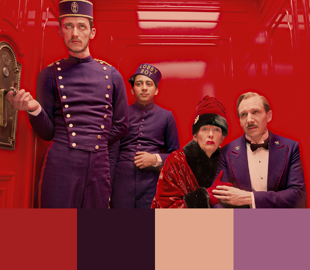
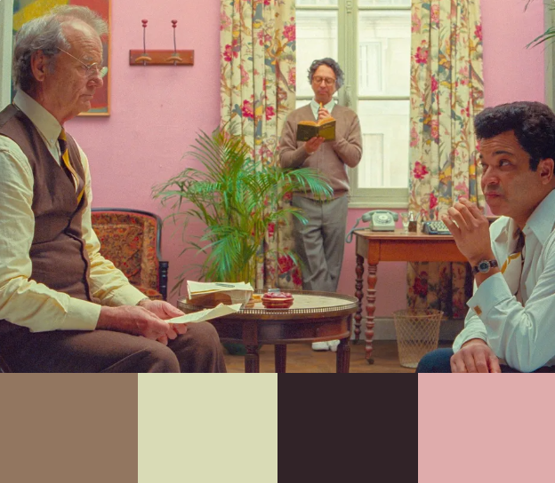
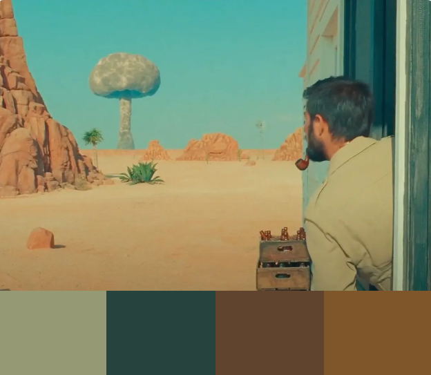
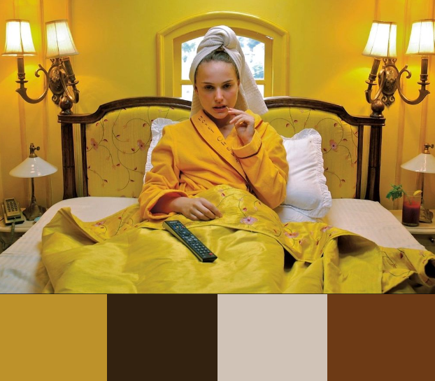

El Director del color
El uso de paletas de colores en las películas de Wes Anderson es fundamental para su estilo visual distintivo y narrativo. Anderson selecciona meticulosamente combinaciones de colores que no solo embellecen las escenas, sino que también subrayan temas emocionales y realzan la personalidad de los personajes. Esta atención al color crea una atmósfera única y coherente que transporta al espectador a mundos vibrantes y cuidadosamente diseñados, haciendo que cada fotograma sea una obra de arte en sí misma. La paleta de colores de Anderson es esencial para establecer el tono de sus películas y para diferenciar sus obras en el panorama cinematográfico. Este enfoque cromático también contribuye a la narrativa, permitiendo que el color actúe como un medio visual para expresar estados de ánimo y relaciones, reforzando así la profundidad y el impacto emocional de sus historias. La elección de colores en sus películas no es accidental, sino una herramienta narrativa deliberada que realza la experiencia cinematográfica y deja una impresión duradera en el espectador.
The Great Budapest Hotel
2014.
The French Dispatch
2022.
Asteroid City
2023.
Chevallier Hotel
2007.